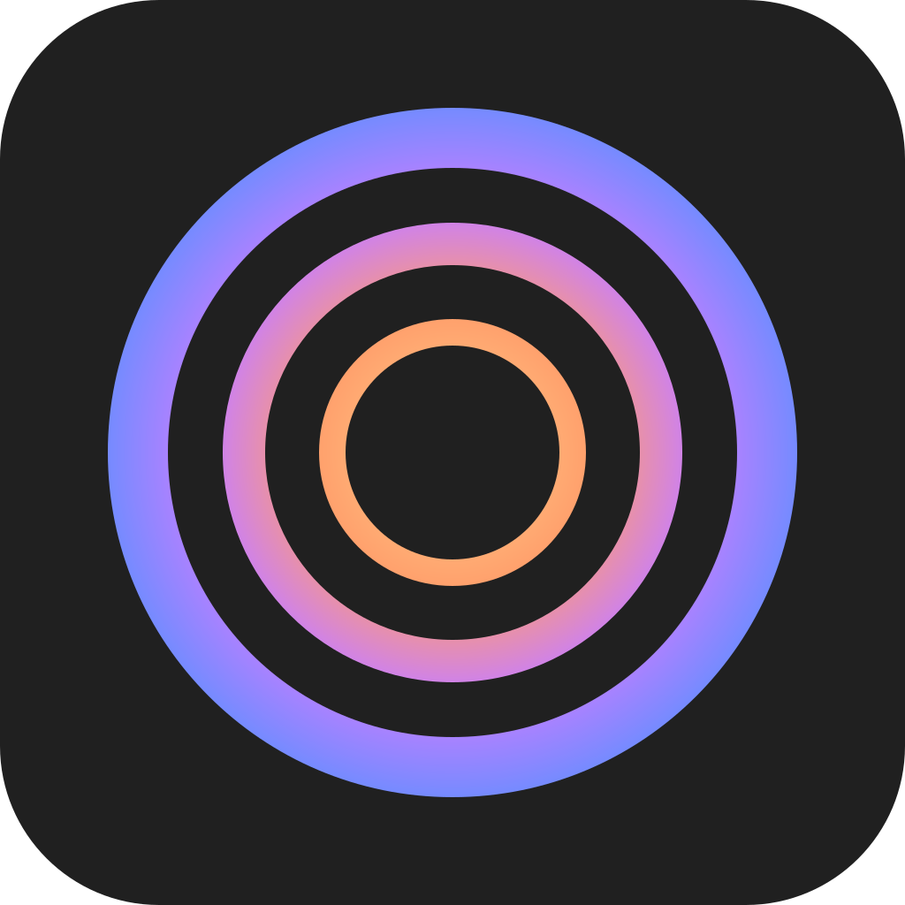
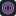
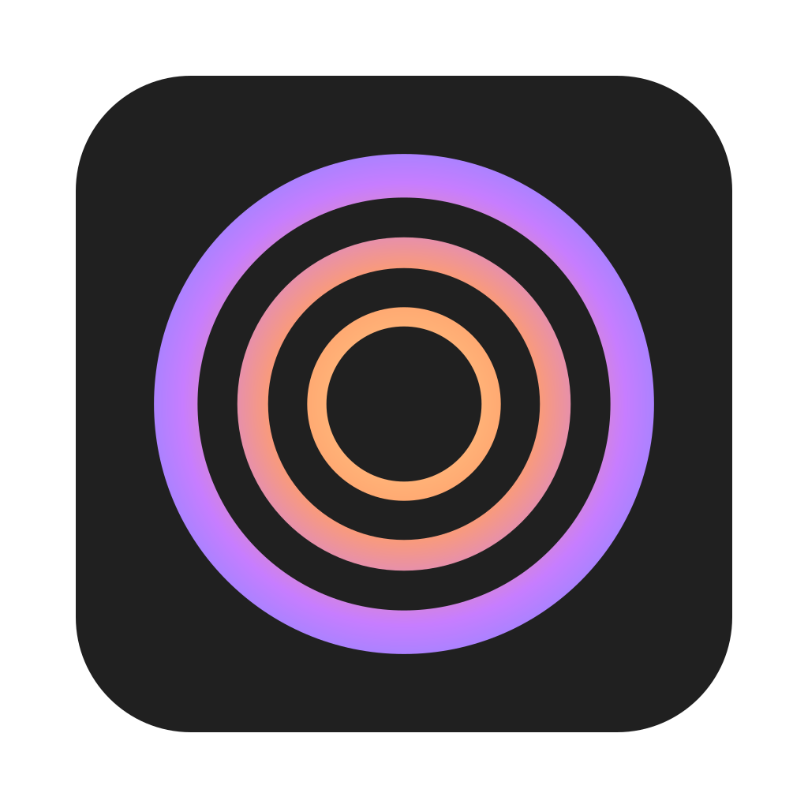
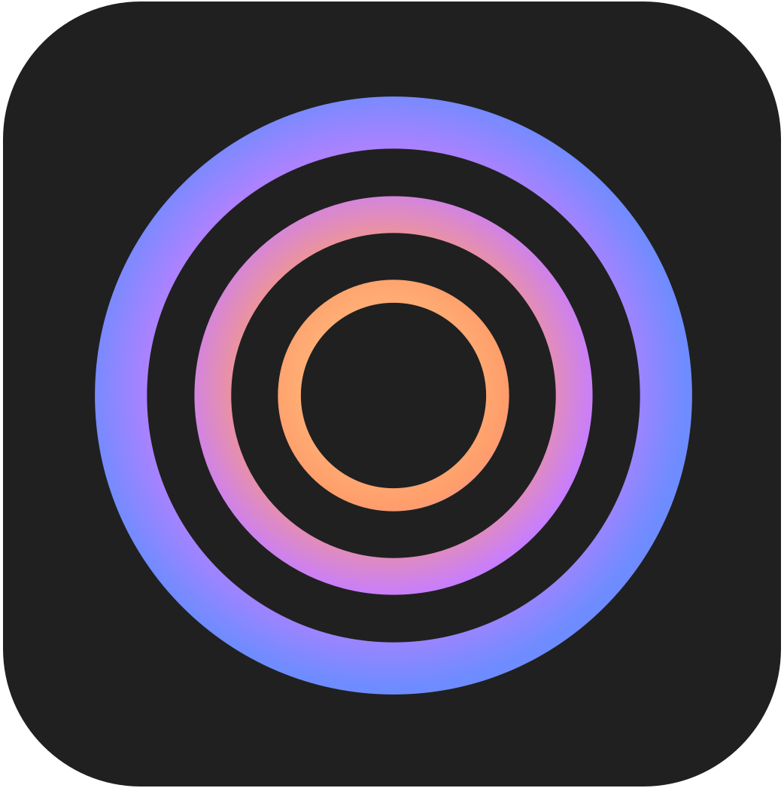
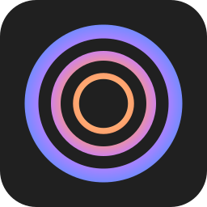
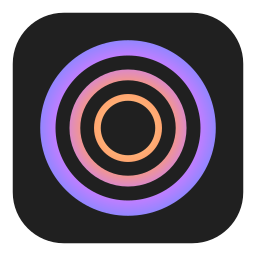
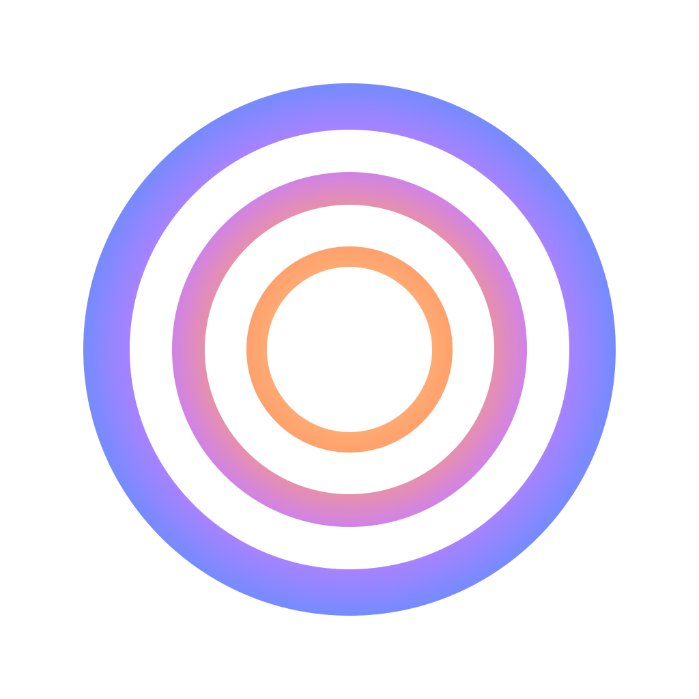
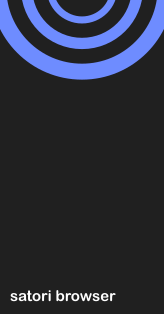

悟 · sudden enlightenment — the e2 gradient, shipped
App icon · scale
Exact Zen ripple geometry (rings 136/30, 236/48, 356/68 on a 1024 plate, corner r180, bg #202020); rings carry the radial gradient amber → coral → violet → periwinkle.

Platforms
macOS uses the Big Sur inset glyph (96 px padding); Windows tiles go near full-bleed; ICOs embed 16→256 frames.
macOS — logo-mac.png · firefox.icns

Windows tiles — VisualElements_150/70

SatoriICO variants — largest frames


pbmode keeps Zen's mask mark — channel-neutral.
File associations — document.ico · document_pdf.ico
Solid-dark rings for contrast on the white page; banner is Zen's #FF0000 block.
In-app surfaces
About dialogs render the transparent about-logo plus the re-baked SF Rounded semibold wordmark (paths, no font dependency).
About Satori

1.21.16b (64-bit)
Mozilla Firefox 154.0.1
Private window — Zen mask kept
Private Browsing
firefox-wordmark.svg — context-fill #20123a
Gecko substitutes the context fill at runtime; shown on cream so the ink reads.
Installer
NSIS wizard banner now says “satori browser”, arcs peeking over the top edge.

Gradient spec — "e2", radial, r400 from icon center
#FFD08A · 0%#FF9E6B · 40%#C77DFF · 70%#6E8CFF · 100%
Bg #202020 · cream brand #F2F0E3 · coral accent #F76F53 (Zen heritage) · rings 136/30 · 236/48 · 356/68 · corner r180 / 1024 plate.